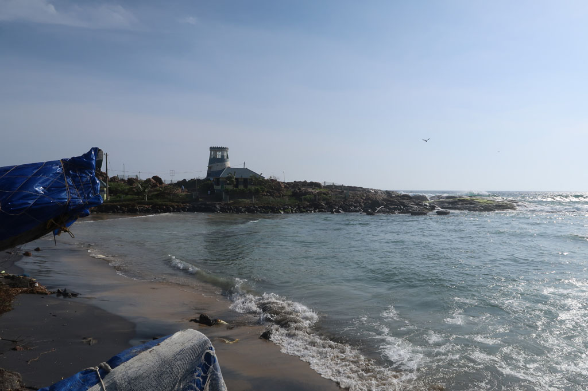

Tamil Nadu / Kovalam jour 3

7h00 réveil au son du haut parleur. C’est la cérémonie de pleine lune à la mémoire des parents décédés. Cela durera jusqu’à 11h00 sur les 2 plages de la ville.
9h00 nous allons prendre un petit déjeuner chez un papi, il finira par nous demander d’écrire nous même la note.
10h00 Piscine
12h00 Omelette en terrasse
13h00 Piscine / sieste / repos. Un groupe d’indiens vient se faire une séance photo au bord de la piscine. Certains ne savant pas nager. Moment sympa.
18H00 nous retrouvons nos amis pour assister au coucher de soleil avec une bonne bière.
21h30 restaurant
23h00 sacs bouclés.
